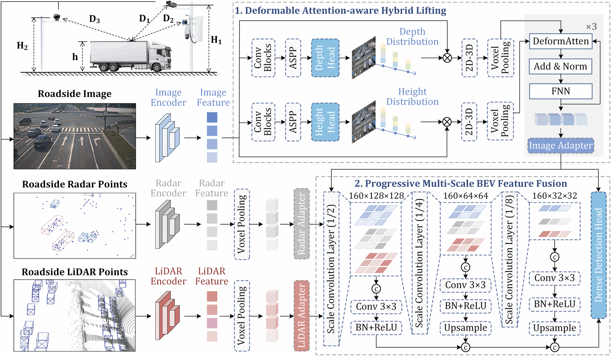
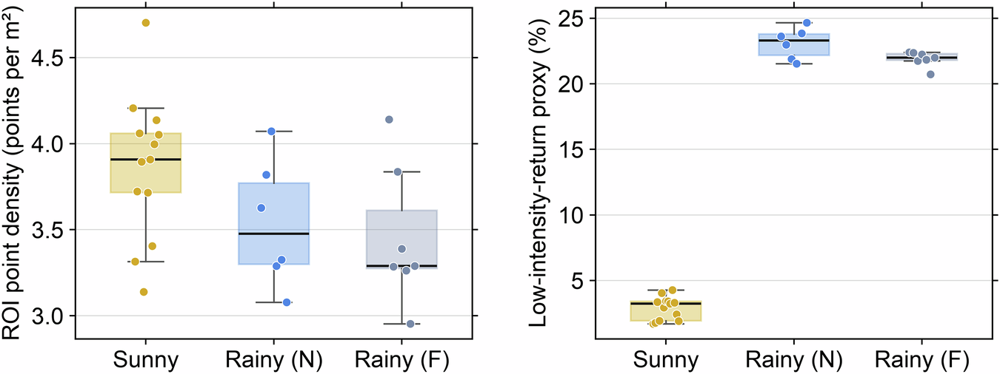

1. 论文一句话
[概括｜摘要、Fig. 1] 作者建立覆盖连续路段的真实路侧相机、LiDAR、4D 毫米波雷达数据集，并用多尺度 BEV 融合基线评估不同配置的三维检测。
2. 研究问题
[作者表述｜Introduction] 从高处、长距离路侧传感器观测出发，在异构传感器覆盖和空间分辨率不同的条件下识别交通参与者并输出 3D 框；天气和夜间照明会进一步影响输入质量。主任务不是逐点去雨。
3. 已有方法与缺口
[概括｜Related Works、Table 1、Methods] 作者认为既有路侧数据集的模态、连续覆盖与天气多样性不足；只做高度先验投影不等于处理异构特征的分尺度融合。现有单一尺度的直接聚合不能充分吸收不同传感器和距离造成的互补关系。
4. 核心观察
[作者表述｜Methods: Hybrid Lifting、Pyramid Fusion] 高位路侧相机的高度线索适合辅助三维定位，深度则组织三维空间关系。相同 BEV 网格不意味着各传感器在不同距离、目标类别上贡献一致。Fig. 17 是独立的天气观测，不是作者推导融合结构的因果证据。
5. 方法
[概括｜Figs. 1、12，PDF pp. 3、18] 固定路侧感知单元采集 → 对时/标定并生成 3D 框 → 相机的高度、深度支路混合提升至 BEV；LiDAR 和雷达分别编码 → 前景感知的渐进多尺度融合 → 密集检测头。网络和设备配置需区分；固定路侧测评不是移动机器人导航测评。
左边是相机、毫米波和激光各自编码；右上相机双支路将高度和深度特征变换到 BEV，右下三种特征经过不同尺度再聚合。图内由浅至深的三个尺度用于保留不同感受野的信息。流程图支持结构对应，不证明单个分支独立贡献，也不是一个对恶劣天气逐点去噪的流程。

6. 作者贡献
[概括｜Introduction] (1) Dataset：600 m 连续路段七处多模态路侧设备；(2) Method/Experiment：真实复杂天气采集和三模态多尺度基准。不是两种独立去噪算法。
7. 实验
[概括｜Technical Validation，Table 4] 25 个片段，1,162 个参考时间戳，七个点位对应 8,134 个同步位置帧，164,447 个 3D 框；不把位置帧当独立时间戳，也不把不同点位重复观测相加成独立对象。80/10/10；报告按类 mAP、NDS、mATE、mASE、mAOE；另有 IoU 三阈值的跨点位协同 AP。作者报告 AdamW、batch 2、100 epochs；硬件配置未核到明确说明；不同天气比较、模态组合、加入跨帧关联的检测后处理变体、视点及通信扰动分别记录，不拼成单模块消融。
- [直接观察｜Fig. 17] 站点 #1，局部坐标径向 25–55 m、垂直 −3 至 3 m。横轴晴天、夜间大雨、雨伴雾。左轴 ROI 点密度：正文中位数 3.91、3.48、3.29 points/m²；右轴原始强度 ≤3 的回波比例：中位数 3.23%、23.30%、21.99%。箱体表示四分位范围。原文声称选 11 个片段，每标记汇总片段首、中、尾时刻；独立 PNG 看起来标记总数多于 11，暂不根据散点反算样本量，更不将低强度比例当逐点噪声真值。已对照 PDF p.28 与出版方独立原图；图文的散点统计单位仍需作者或数据记录澄清，不能据此重算置信区间。
两图横轴为晴天、夜间大雨、雨伴雾；左轴为每平方米点数，右轴为原始强度不超过 3 的回波百分比。图中箱线与散点对应分组，不是噪声点真值标注。晴天左图中位线较高，而右图显著较低；两张图的纵轴单位不可互换。雨伴雾与夜间大雨也不构成固定照明条件下的雨量梯度。

- [直接观察｜Tables 7、8，PDF p.26] 同一 #6 点位分别报告固态与机械 LiDAR。固态下 HeightFusion++ C+L 的 cyclist/pedestrian mAP 为 43.07%/37.64%，汽车 mAP 为 31.29%，低于 BEVFusion 的 60.94%；机械下该配置为 32.29/27.66/24.86%。两表不证明同一冻结模型跨传感器零样本泛化，也不支持全条件最佳。
- [直接观察｜Table 11，PDF p.29] 雨伴雾时三模态普通版 pedestrian mAP 25.64%、NDS 0.444，加入跨帧关联的检测后处理变体 pedestrian mAP 33.44%，但 NDS 0.321、cyclist mAP 从 13.55% 降至 8.13%。额外时序信息的收益按类和指标分化，不能总结为全面提升。
- [直接观察｜Tables 12、13，PDF p.30] #6/#7 跨站比较中 Early Fusion 的三阈值平均 AP 71.03%，Late Fusion 29.50%；900 ms 模拟延迟下 Early Fusion 68.69%，不把模拟扰动称为现实通信实测。
8. 边界
[直接观察｜Figs. 14、17；Tables 9–13] 雨、雾与照明没有做逐项独立干预；真实场景组间差异不等于雨量因果。作者只在设定站点和数据集比较；图中强度代理不作独立标签，亦没有雪、沙尘或在线逐点过滤验证。两传感器差异和时序反例按第七节保留。
9. 未来方向
[作者表述｜Technical Validation 末尾] HEAL 等结果只是异构协同扩展的初步证据，提出未来需在不同配置和感知框架适配验证。
10. 逻辑链
[概括] 路侧点位/天气覆盖不足 → 真实连续多站采集和标注（Fig. 1、Table 4）→ 高处视角和模态尺度互补 → 高度/深度混合提升与前景多尺度融合（Fig. 12）→ 按点位、天气、类别与模态分别验证（Tables 5–13）。天气点特征与检测成绩是两份不同证据。
11. 五条记忆
- 路侧检测数据集与基线，不是逐点去雨。
- 连续路段和真实多天气是数据贡献（Table 4）。
- 高度、深度和多模态互补随任务条件而变（Methods）。
- 前景多尺度 BEV 是融合核心（Fig. 12）。
- 雨雾下增加时序后处理不保证所有指标都提升（Table 11）。
12. 暂不展开
Figs. 1/12 的实现映射、Methods 式 (10) 附近的金字塔融合、Tables 12/13 的延迟/压缩/位姿扰动协议留待精读。